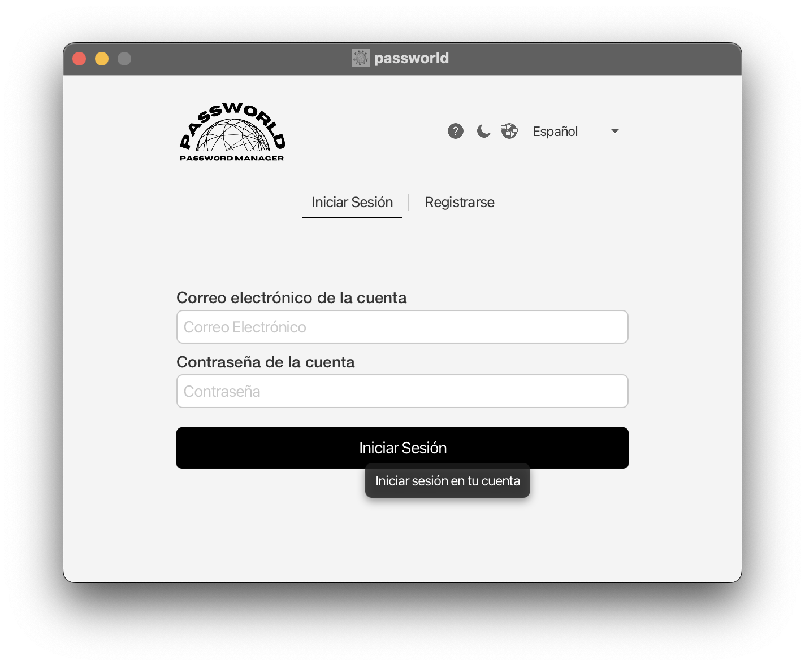
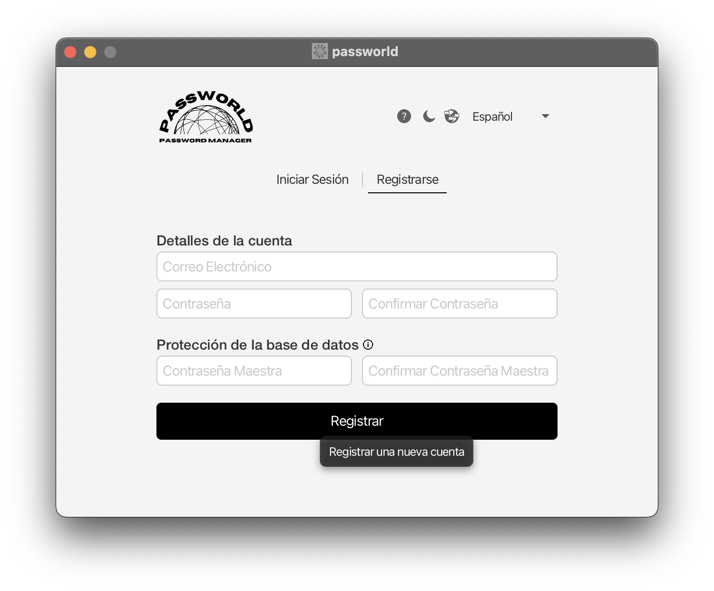
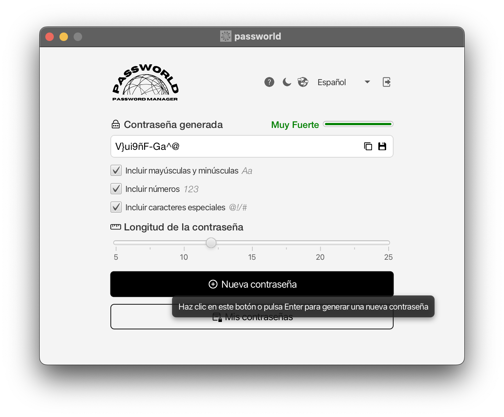
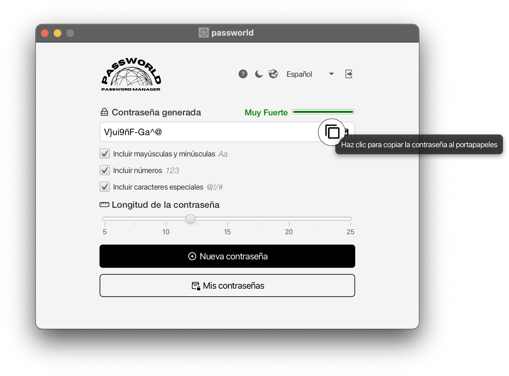
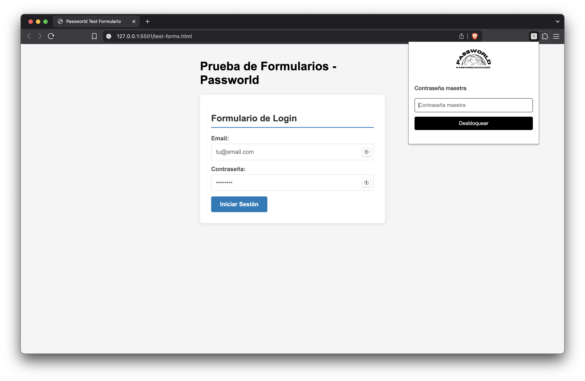

Primeros pasos
Al ejecutar la aplicación por primera vez tras su instalación, deberás iniciar sesión con una cuenta
existente o registrar una nueva cuenta.
Para ello, debes seleccionar la opción con la que desees
continuar.
Puedes cambiar entre secciones haciendo clic sobre ellas o con las flechas derecha e
izquierda del teclado.
La proxima vez que ejecutes la aplicación no verás esta ventana.
Iniciar sesión
Para iniciar sesión necesitarás conocer los siguientes datos:
- Correo electrónico con el que creaste tu cuenta
- Contraseña de tu cuenta
Bastará con introducir los datos requeridos y pulsar el botón.
Registrarse
Para registrarte necesitarás aportar los siguientes datos:
- Correo electrónico
- Contraseña de tu cuenta
- Contraseña maestra del baúl (requerida para consultar tus contraseñas)
Bastará con introducir los datos requeridos y pulsar el botón.
Cerrar sesión
Para cerrar sesión es necesario que haya una sesión activa.
Se deberá pulsar el botón situado en
la parte superior derecha únicamente de la ventana principal de la aplicación.
Se te pedirá
confirmación
Una vez cerrada la sesión, volverás a la ventana de inicio de sesión/registro
Cambiar idioma
Para cambiar el idioma debes hacer clic sobre el desplegable que encontrarás en la parte superior de Passworld en la mayoría de ventanas
Una vez desplegado, selecciona el idioma que desees y se aplicará automáticamente.
La primera vez que ejecutes la aplicación se cargará el idioma del sistema, o en su defecto, el
Español.
La proxima vez que ejecutes la aplicación se cargará el idioma que seleccionaste la
última vez
Ten en cuenta que el desplegable podría no aparecer en todas las ventanas de la aplicación.

Cambiar tema
Para cambiar el tema debes hacer clic sobre el botón de luna o sol que encontrarás en la parte superior de Passworld en la mayoría de ventanas
La proxima vez que ejecutes la aplicación se cargará el tema que seleccionaste la última vez
Ten en cuenta que el botón podría no aparecer en todas las ventanas de la aplicación.

Abrir la ayuda
Para abrir la ayuda debes hacer clic sobre el botón de interrogación que encontrarás en la parte superior de Passworld en la mayoría de ventanas
Ten en cuenta que el botón podría no aparecer en todas las ventanas de la aplicación.
Desbloquear baúl de contraseñas
Para desbloquear el baúl debes introducir la contraseña maestra que estableciste al registrarte.
Si no recuerdas la contraseña, no podrás acceder a tus contraseñas almacenadas y deberás contactar a soporte.

Generar contraseña personalizada
Para generar una contraseña personalizada debes hacerlo desde la ventana principal
Puedes personalizar las características de la contraseña que se generará.
La contraseña por defecto contendrá al menos una letra mayúscula, una minúscula, un número, un caracter especial y 12 caracteres de longitud.
Copiar contraseña generada desde la ventana principal
Para copiar una contraseña generada desde la ventana principal bastará con pulsar el botón correspondiente.
También podrás pulsar el la combinación de teclas CTRL+C en Windows/Linux o CMD+C en MacOS.
Guardar contraseña generada desde la ventana principal
Para guardar una contraseña generada desde la ventana principal bastará con pulsar el botón correspondiente
También podrás pulsar el la combinación de teclas CTRL+G en Windows/Linux o CMD+G en MacOS

A continuación, aparecerá un cuadro de diálogo para establecer algunos datos relacionados con la contraseña:
- Descripción (obligatorio): Debes establecer un identificador para la contraseña
- Usuario (opcional): Puedes establecer un nombre de usuario o correo electrónico asociado a la contraseña
- URL (opcional): Puedes establecer una URL para la plataforma asociada a la contraseña
- Contraseña (obligatorio): Podrás ver, modificar o regenerar la contraseña generada que vas a guardar
Una vez establezcas los datos que quieras guardar junto a la contraseña, pulsa sobre el botón "Guardar" para guardarla
Si no quieres guardar la contraseña, puedes pulsar el botón "Cancelar" para volver a la ventana principal
Ver mis contraseñas
Para ver tus contraseñas bastará con pulsar el botón correspondiente.

Una vez pulsado el botón podrás consultar todas tus contraseñas guardadas.
Las contraseñas que presenten un icono de advertencia a la derecha tienen problemas de seguridad sin resolver.
Listar todas mis contraseñas
Para listar todas tus contraseñas bastará con pulsar el botón de filtrado correspondiente.
Listar mis contraseñas con problemas de seguridad
Para listar las contraseñas que presenten problemas de seguridad sin resolver bastará con pulsar el botón de filtrado correspondiente.
Listar mis contraseñas ordenadas según un criterio
Para listar las contraseñas ordenadas según un criterio deberás pulsar el botón correspondiente y elegir un criterio de ordenación.
Puedes ordenar las contraseñas según varios criterios:
- Más antigua a más reciente
- Más reciente a más antigua
- A-Z
- Z-A

Buscar contraseñas
Para buscar contraseñas deberás pulsar sobre el icono de la lupa en la lista de contraseñas y escribir en el buscador.
Puedes buscar según varios criterios:
- Descripción
- Usuario
- URL
Crear una contraseña desde la sección "Mis contraseñas"
Para cear una contraseña desde la sección "Mis contraseñas" bastará con pulsar el botón "+"
A continuación, aparecerá un cuadro de diálogo para establecer algunos datos relacionados con la contraseña:
- Descripción (obligatorio): Debes establecer un identificador para la contraseña
- Usuario (opcional): Puedes establecer un nombre de usuario o correo electrónico asociado a la contraseña
- URL (opcional): Puedes establecer una URL para la plataforma asociada a la contraseña
- Contraseña (obligatorio): Podrás escribir una contraseña o generarla con el botón correspondiente
Una vez establezcas los datos que quieras guardar junto a la contraseña, pulsa sobre el botón "Guardar" para guardarla
Si no quieres guardar la contraseña, puedes pulsar el botón "Cancelar" para volver a la ventana principal
Consultar la información de una de mis contraseñas
Para consultar la información de una de tus contraseñas deberás pulsar sobre ella
A continuación, aparecerá una ventana con los todos los datos de la contraseña, además de un indicador sobre su fortaleza y una sección con información sobre el estado de seguridad de sus datos.
El indicador de fortaleza de contraseña tiene cinco posibles valores:
- Muy débil: La contraseña es muy fácil de adivinar y debes modificarla
- Débil: La contraseña es fácil de adivinar y debes modificarla
- Media: La contraseña es aceptable, pero puedes mejorarla
- Fuerte: La contraseña es difícil de adivinar, pero puedes mejorarla
- Muy fuerte: La contraseña es muy difícil de adivinar y no es necesario modificarla
La sección de información del estado de seguridad de los datos de una contraseña puede mostrar varios mensajes:
- Sin problemas de seguridad: Tus datos están seguros
- Contraseña comprometida: La contraseña ha sido expuesta en una brecha de seguridad y debes modificarla
- Contraseña duplicada: La contraseña se ha utilizado en varias plataformas y te recomendamos modificarla
- Contraseña débil: La contraseña es fácil de adivinar y debes modificarla.*
*Nota: Este mensaje aparecerá si la contraseña tiene un indicador de fortaleza de "muy débil" o "débil" - URL comprometida: La URL ha sido expuesta en una brecha de seguridad o está relacionada con actividades sospechosas y te recomendamos
La contraseña aparece oculta por seguridad. Para mostrarla bastará con pulsar sobre ella.
Una
vez
descubierta, podrás copiarla o regenerarla con los botones correspondientes.
Puedes eliminar la contraseña pulsando el botón 'Eliminar'
Eliminar una contraseña
Para eliminar una contraseña debes acceder a su información y pulsar sobre el botón
'Eliminar'
Se
te pedirá confirmación antes de la eliminación permanente.
Una contraseña eliminada es
irrecuperable.
Consultar información sobre la aplicación
Para consultar información sobre la aplicación, como la versión, debes pulsar el logo de la aplicación que encontrarás en la parte superior de Passworld en la mayoría de ventanas.
Manual de la extensión de navegador
La extensión de navegador de Passworld te permite acceder a tus contraseñas directamente desde tu navegador web y rellenar automáticamente formularios de inicio de sesión.
La extensión funciona con navegadores basados en Chromium como Chrome, Edge, Brave y Opera.
Nota: Para usar la extensión necesitas tener una cuenta de Passworld ya creada y configurada.
Iniciar sesión en la extensión
Para iniciar sesión en la extensión de navegador:
- Haz clic en el icono de Passworld en la barra de herramientas del navegador
- Aparecerá una ventana emergente con el formulario de inicio de sesión
- Introduce tu correo electrónico en el campo "Correo electrónico"
- Introduce tu contraseña de cuenta en el campo "Contraseña"
- Haz clic en "Iniciar sesión" o presiona Enter
Si los datos son correctos, serás redirigido a la pantalla de contraseña maestra.
Nota: Puedes usar las teclas Tab para navegar entre los campos y Enter para confirmar.

Desbloquear baúl en la extensión
Después de iniciar sesión correctamente, necesitas desbloquear tu baúl de contraseñas:
- Introduce tu contraseña maestra en el campo correspondiente
- Haz clic en "Desbloquear" o presiona Enter
- El sistema verificará tu contraseña maestra
- Si es correcta, se mostrarán tus contraseñas guardadas
La extensión recordará tu sesión durante 30 minutos de inactividad.
Importante: Si olvidas tu contraseña maestra, no podrás acceder a tus contraseñas guardadas.
Rellenar automáticamente formularios
La extensión puede rellenar automáticamente formularios de inicio de sesión:
- Navega a una página web con un formulario de login
- Haz clic en el icono de Passworld
- Se mostrarán las contraseñas, priorizando las del sitio actual
- Haz clic en cualquier tarjeta de contraseña para rellenar automáticamente los campos

Ver contraseñas guardadas
La extensión te permite ver todas tus contraseñas guardadas:
Contraseñas recomendadas
Las contraseñas que coinciden con el sitio web actual aparecen destacadas en la sección "De este sitio"
Funciones disponibles para cada contraseña
- Clic en la tarjeta: Rellena automáticamente los campos de la página
- "Mostrar contraseña": Revela u oculta la contraseña
- Icono de copiar: Copia la contraseña al portapapeles
Información de campos
Si algún campo muestra "Sin usuario" o "Sin URL", significa que esa información no fue guardada originalmente.
Copiar contraseñas desde la extensión
Para copiar una contraseña al portapapeles:
- Haz clic en "Mostrar contraseña ⏷" para revelar la contraseña
- Haz clic en el icono de copiar junto a la contraseña
- La contraseña se copiará automáticamente al portapapeles
Una vez copiada, puedes pegarla manualmente en cualquier campo usando Ctrl+V (Windows/Linux) o Cmd+V (macOS).

Cerrar sesión en la extensión
Para cerrar sesión en la extensión:
- Haz clic en el icono de Passworld para abrir la extensión
- Haz clic en "Cerrar sesión" (aparece como un enlace subrayado)
¿Qué sucede al cerrar sesión?
- Se borran todos los datos de sesión locales
- Las contraseñas descifradas se eliminan de la memoria
- Regresarás a la pantalla de inicio de sesión
- Los campos de email y contraseña se limpian automáticamente
Cierre automático de sesión
La extensión cierra automáticamente la sesión después de 30 minutos de inactividad por seguridad.
Recomendación: Cierra siempre la sesión cuando uses ordenadores compartidos o públicos.